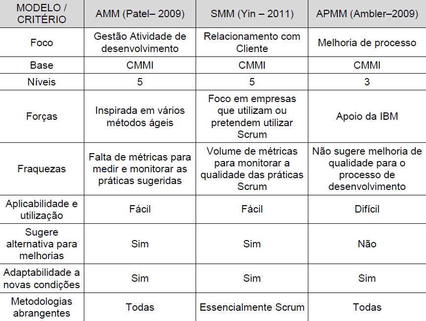
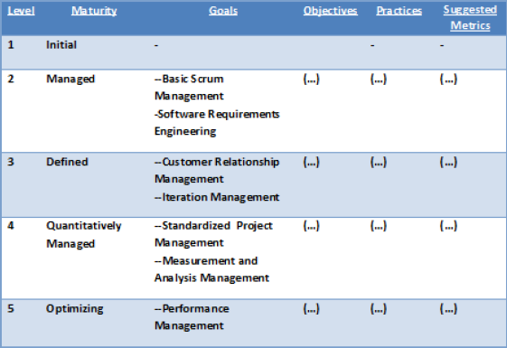
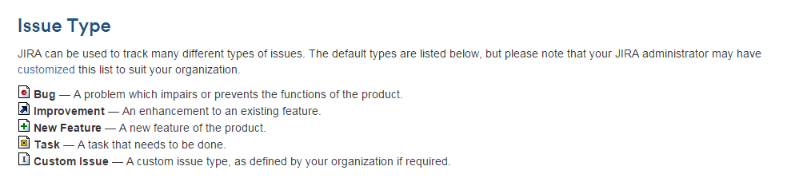
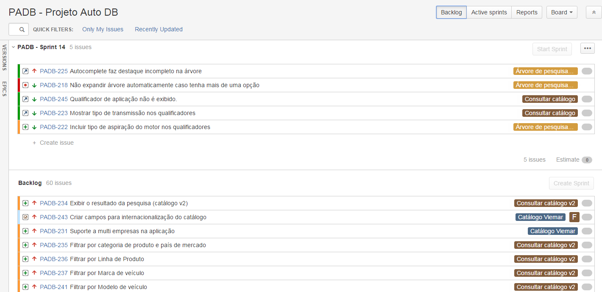
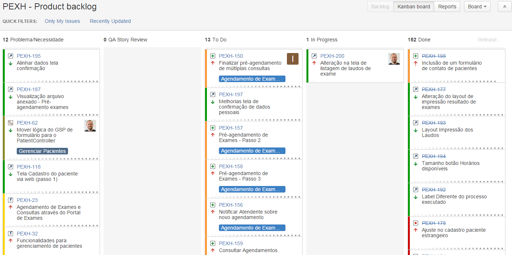
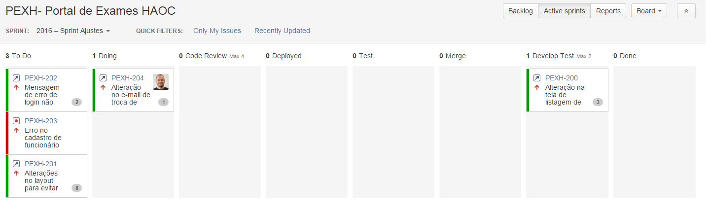
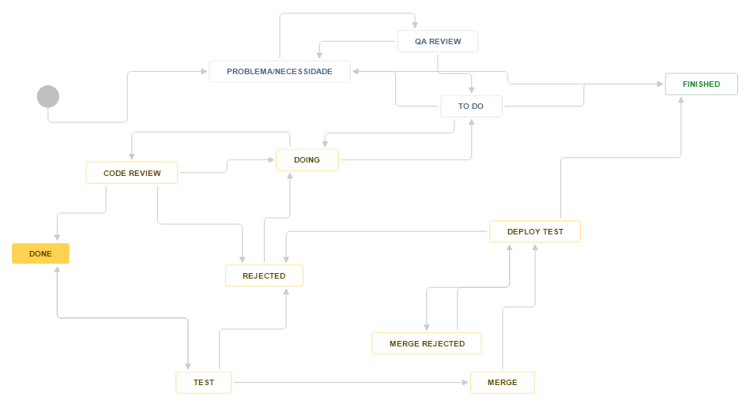
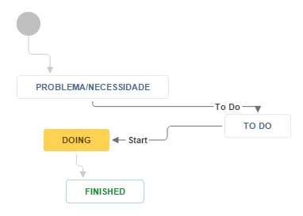

Aplicação de um modelo de maturidade ágil
Trabalho de Conclusão I
Raphael Rodrigues /
Raone Costa
Orientadora: Alessandra C.Smolenaars Dutra
Tema
Aplicação de um modelo de maturidade ágil na transformação da empresa Softdesign de uma empresa tradicional para uma empresa ágil
Motivação
Um dos diferencias para as organizações se manterem melhores que seus concorrentes é, continuadamente, manter a melhoria dos seus processos (Kechi Hirama em Engenharia de Software: Qualidade e Produtividade e Tecnologia)Motivação
Modelos de maturidade permitem classificar a organização perante seus processos de desenvolvimento. Eles funcionam como um guia para a criação e melhoria de processos de desenvolvimento de software.Olhando para dentro da Soft
- Como saber se estamos seguindo corretamente a metodologia ágil, suas práticas e princípios?
- Não teremos mais um diferencial quanto a maturidade de nossos processos?
- Como iremos medir a eficácia destes?
- Qual será a referência para nossos processos?
Modelos de Maturidade Ágil
- AMM - Agile Maturity Model (Patel e Ramachandran)
- APMM - Agile Process Maturity Model (Scott Ambler)
- SMM - Scrum Maturity Model (Alexandre Guo Yin)
Modelos de Maturidade Ágil
Scrum Maturity Model
NÍVEL 1: INITIAL
O primeiro e menor nível de maturidade pode ser designado a qualquer organização que utiliza SCRUM.Com este nível, não existe uma definição clara do desenvolvimento ágil com SCRUM dentro da organização
NÍVEL 2: MANAGED
As práticas de desenvolvimento aparecem mais estruturadas e completas do que no nível 1.Os dois principais objetivos deste nível de maturidade:
Basic Scrum Management: Todos os papéis, responsabilidades e reuniões do SCRUM devem existir na organização, não necessariamente sendo corretas e efetivas.
Software Requirement Engineering:Ditam uma série de práticas para que a organização as cumpra com o objetivo de melhorar a qualidade do produto final gerado.
NÍVEL 3: DEFINED
O maior foco é o relacionamento com o cliente e as entregas no prazo.Os principais objetivos:
Customer Relationship Management: Lista um conjunto de práticas que precisam ser cumpridas para que o relacionamento com o cliente seja o melhor possível.
Iteration Management: É listado um conjunto de práticas para que os projetos e sprints sempre sejam entregues no prazo e no orçamento correto.
NÍVEL 4: QUANTITATIVELY MANAGED
A organização tem um processo de desenvolvimento de software padronizado e regular adicionado de um gerenciamento de performance de projetos através de medições a práticas de análise.NÍVEL 5: OPTIMIZING
É o nível mais alto da maturidade no desenvolvimento de projetos utilizando a metodologia SCRUM. O foco é em uma continua auto melhoria.Framework do Scrum
O time Scrum e seus Papéis:
- ScrumMaster
- Product Owner
- Time
Artefatos:
- Visão (*)
- Product Backlog
- Sprint Backlog
- Release Burndown (*)
- Sprint Burndown
Cerimônias (Time-boxes):
- Release Planning (*)
- Sprint Planning
- Sprint
- Daily Scrum
- Review/Demo
- Retrospective
Documento Visão
Product Backlog
Board
Backlog
Board
Backlog Kanban
Sprint Backlog
Workflow Issue Type
New Feature
Workflow Issue Type
Task
Sprint Burndown

Sprint Burndown
Sprint Falhada

Release Burndown